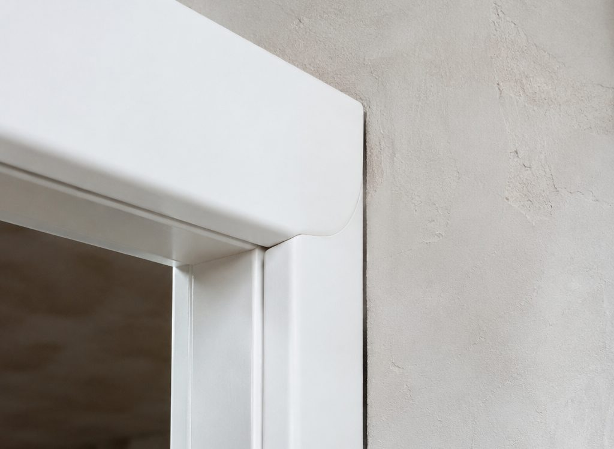
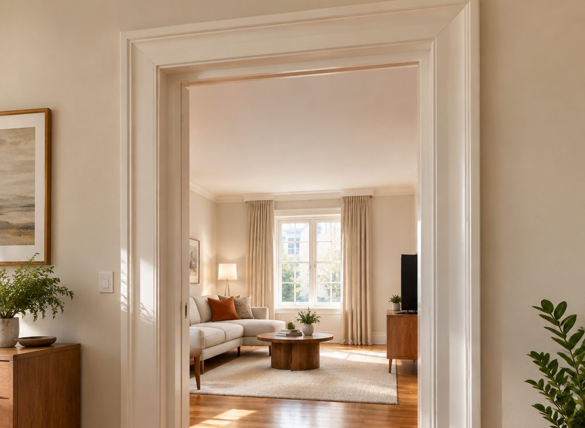

Ведомость
Откосы и наличники
Это то, что видно каждый день. Полотно можно поменять, а кривой откос останется навсегда.
Подготовка проёма
Убираем старые наличники и пену, выравниваем плоскость, проверяем углы. На кривую стену ровный откос не встанет.
Откосы
Плоскость внутри проёма от коробки до стены. Ставим так, чтобы ширина откоса была одинаковой по всей высоте.
Телескопический наличник
Входит в паз коробки и в откос, без гвоздей и без герметика. При усадке его можно подтянуть, а не перекрашивать.
Углы и примыкания
Запиливаем под 45° с прижимом: стык без тёмной щели. Примыкание к полу закрываем аккуратно, без «нашлёпок».
Швы и герметизация
Тонкий шов по стыку со стеной, чтобы не было видно зазора и не дуло. Излишки убираем сразу, пока не схватились.
Уборка
Пыль от запилов собирается пылесосом на инструменте. В конце протираем наличники и подоконник рядом с проёмом.

Детали
Мелочи, которые
видно каждый день
Ширина наличника должна быть одинаковой слева и справа, а сверху — симметричной. Если сверху планка на 10 мм шире, это заметно с первого взгляда, просто не сразу понятно, что не так.
Откос должен быть ровным по всей высоте: разница в 3 мм на глаз уже читается как «косо».
Считаем
Сколько наличника
и откосов
Метраж наличника и площадь откосов считаются по проёму и толщине стены. Калькулятор ниже покажет ориентир.
Считаем по типовой коробке 70 мм и зазорам 3 мм. Это ориентир для заказа и разговора с поставщиком, точные размеры даёт замер.
Размер полотна, ориентир
825 × 2005 мм
Округлено в меньшую сторону до 5 мм: полотно проще подрезать по месту, чем нарастить.
Полотно: Ш − 75 мм, В − 45 мм. Наличник: 2 × В + Ш, × 1,1 на подрезку, × 2 стороны. Откосы: периметр × толщина стены.
Вопросы
Про откосы
Чем отличается откос от наличника
Откос — это плоскость внутри проёма, между коробкой и стеной. Наличник — накладная планка, которая закрывает стык коробки со стеной снаружи. Часто делают и то, и другое.
Обязательно ли делать откосы
Если стена тонкая или проём узкий, можно обойтись наличником. Когда стена 120–200 мм, откос нужен: иначе будет видно необработанную стену внутри проёма.
Что лучше: телескопический наличник или обычный
Телескопический удобнее: он входит в паз и его можно подтянуть при усадке. Обычный крепится на клей и гвозди без шляпок, снять его сложнее.
Можно ли поставить наличники на старую дверь
Можно, если коробка ровная. Если коробка «гуляет», сначала придётся поправить её, иначе планка повторит кривизну.
Будет ли пыль от запилов
Пилим с отсосом: пылесос подключён к торцовке. Пыль остаётся в мешке, а не на мебели.
Заявка
Откосы и наличники
Скажите толщину стены и количество проёмов.
